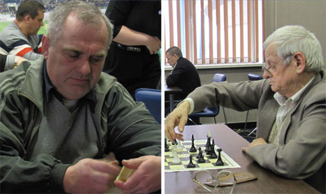

выигрыш всего лишь 2-1 у «Альфа-Банка» не дал им выйти из группы. Дело в том, что за победу 2-0 по партиям команда получает 3 очка, а за победу 2-1 – всего лишь 2. Наша пара получила 5 очков за групповой этап. «Альфа-Банк» одержал две сухие победы и взял в проигрыше
с нами одно очко (всего 7). «Водоканал» одержал две сухие победы, набрав 6 очков. Таким образом, наша пара заняла 9 место. В финале, наши соперники «Водоканал» и «Альфа-Банк» встретились вновь и на этот раз водяники были сильнее. Третье место занял «Приватбанк».
В общем зачёте настольного тенниса наше предприятие заняло 7-е место.
Призёры в общем зачёте по настольному теннису: I – «KING», II – «Водоканал», III – «ЦДБ».
Настольное многоборье
Для этого ещё одного экзотического вида спортивной программы, проведенного 13 марта в VIP-здании стадиона «Металлист», были проведены внутренние чемпионаты и отборы КП «ХТС».
Представителем сборной по шахматам стал победитель чемпионата «Тепловых сетей» — многоопытный Виктор Бака. Одержав 4 победы в «Битве корпораций» и проиграв 3 раза, наш шахматист занял 5-е место. Хотя, поначалу он имел результат 4-0-1 и рассчитывал на призы.
Соревнования по шашкам проводились только среди девушек. Самой способной представительницей «Тепловых сетей» в этом виде спорта оказалась Наталия Гармаш. Подготовкой Наталии к соревнованиям занялся Виктор Бака. В итоге передача опыта вылилась в шестое место. Наталия Гармаш провела 9 игр, в которых одержала 4 победы, 2 ничьих и 3 поражения.
В состав команды по деберцу вошли Тарас Волков и Игорь Зенин. Эти ребята были объединены, как лучшие участники двух пар, игравших в финале чемпионата КП «ХТС». Одержав три победы в групповом этапе, наши мастера деберца проиграли в четвертьфинале 1-2 и заняли итоговое 5-е место в своём виде.
Для участия в соревнованиях по домино нужна была смешанная пара, в состав которой у нас вошли опытный Николай Бовтенко и амбициозная Ольга Иваненко. Команда, победив три раза в своей группе, отправились в четвертьфинал. По иронии судьбы, четвертьфинал за-
вершился аналогичным проигрышем 1-2 наших представителей и в этом виде. Здесь также нам присудили 5-е итоговое место.
Благодаря не призовым, но достойным местам, всех четверых участников, команда КП «ХТС» заняла 4-е место в общем зачёте по настольному многоборью.
Легкоатлетическое многоборье
В состав этого этапа «Битвы корпораций», прошедшего 10 апреля на стадионе «Динамо», были включены 4 вида спорта. Лишь два относятся к лёгкой атлетике: эстафета 4*100 метров, прыжки в длину у мужчин. Перетягивание каната и метание теннисного мяча у женщин — нет.
Участники команды тепловых сетей провели две совместных тренировки, на которых выбрали 6 лучших по времени: Виктор Лукьянченков, Наталья Пустовая, Андрей Андреев, Наталья Чепец, Сергей Титаренко и Наталия Гармаш. Команда чисто беговая.
В смешанной эстафете на каждом этапе бежали две девушки и два парня. Удачно пройдя четвертьфинал эстафеты 4*100м, показав 4-5 результат среди всех 16
команд, наши ребята отправились тянуть канат в 1/8 финала против команды «Freshline». Очень малая общая масса команды не позволила выиграть ни одной из двух схваток. Хотя, в первой схватке мы не дотянули соперников до черты 5 сантиметров. По результатам этого этапа, мы поделили последние места.
Третьим видом были прыжки в длину. Наш Виктор Лукьянченков уверенно завоевал серебро, показав личный рекорд — 6,03 метр.
Далее следовал полуфинал беговой эстафеты 4*100 метров, перед которым было выполнено две замены. Наша команда показала третий результат и не прошла в финал. Мы заняли пятое место в общем зачёте по бегу.